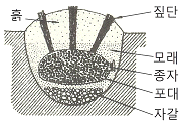
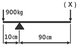
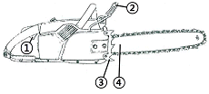
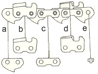

산림기능사 (2007-09-16 기출문제)
1과목: 조림 및 육림기술
1. 토양입자의 표면에 얇은 막으로 부착된 물리적 결합형 태를 가진 토양 수분은?
- 흡착수
- 모관수
- 중력수
- 결합수
(정답률: 67%)

2. 다음 그림은 종자 저장 방법이다. 무슨 저장 방법인가?

- 실온저장법
- 밀봉저장법
- 보호저장법
- 노천매장법
(정답률: 94%)
3. 택벌림의 전 구역을 몇 개의 벌채 열구로 구분하고, 한 구역을 벌채한 다음 순차적으로 다음 구역을 벌채하고 다시 첫 번째 구역으로 되돌아서 같은 택벌을 계속한다. 이때 제자리에 다시 돌아오게 되는 기간을 무엇이라 하는가?
- 윤벌기
- 회귀년
- 간벌기간
- 벌채시기
(정답률: 92%)
4. 나무의 무기양분 흡수가 주로 이루어지는 부분은?
- 부름켜
- 뿌리
- 잎
- 줄기
(정답률: 89%)
5. 임목종자의 품질검사 항목에 해당되지 않는 것은?
- 종자의 건조법
- 1L의 종자 중량
- 발아율
- 종자 1000립의 중량
(정답률: 70%)
6. 일반적으로 밑깍기 작업에 적당한 계절은?
- 봄
- 여름
- 가을
- 겨울
(정답률: 86%)
7. 다음 중 무배유 종자는?
- 밤나무
- 물푸레나무
- 소나무
- 이깔나무
(정답률: 79%)
8. 산림토양의 생산력을 유지하기 위한 방법이 아닌 것은?
- 자연의 힘에 의해 스스로 생산력이 유지되도록 해준다.
- 대면적 개벌을 통하여 피해를 최소화 한다.
- 산림작업으로 발생되는 잎 등의 산물은 작업지에 남겨둔다.
- 산불을 예방한다.
(정답률: 78%)
9. 산벌작업 시 임목의 종자을 공급하여 치수의 발생을 도모하기 위한 벌채는?
- 예비벌
- 하종벌
- 후벌
- 종벌
(정답률: 63%)
10. 밑깍기(下刈)의 가장 중요한 목적은?
- 조림목에 안정된 환경을 만들어 주기 위함
- 겨울철에 동해를 방지하기 위함
- 음수 수종의 생장을 도모하기 위함
- 수목의 나이테 나비를 조절하기 위함
(정답률: 86%)
11. 다음 중 모수작업의 모수 설명이 틀린 것은?
- 바람의 저항이 강할 것
- 결실연령에 도달할 것
- 유전적 형질이 좋은 나무일 것
- 음수 수종일 것
(정답률: 87%)
12. 묘포 적지에 대한 설명으로 틀린 것은?
- 토심이 깊고 부식질 함량이 많으면 좋다.
- 토양의 산도는 침엽수종은 pH5.0~6.5가 적당하다.
- 포지는 약간의 경사가 있으므로 관, 배수에 유리하다.
- 포지의 북서향에 방풍림이 있으면 좋지 않다.
(정답률: 77%)
13. 다음 중 파종 후의 작업 관리 중 삼나무 묘목의 뿌리 끊기 작업 시기로 가장 적합한 것은?
- 3월 중순
- 5월 중순
- 7월 중순
- 9월 중순
(정답률: 67%)
14. 다음 중 종자의 보습저장이 요구되는 수종은?
- 소나무
- 낙엽송
- 가래나무
- 삼나무
(정답률: 59%)
15. 인공갱신에 대한 천연갱신의 장점이 아닌 것은?
- 자연환경의 보존 및 생태계 유지측면에서 유리하다.
- 성숙한 나무로부터 종자가 저절로 떨어져서 숲이 조성된다.
- 생산되는 목재가 균일하며 작업이 단순하다.
- 보안림, 국립공원 또는 풍치를 위한 숲은 주로 천연 갱신에 의한다.
(정답률: 89%)
16. 임지에 서 있는 성숙한 나무로부터 종자가 떨어져 어린나무를 발생시키는 갱신방법은?
- 천연하종갱신
- 인공조림
- 맹아갱신
- 파종조림
(정답률: 91%)
17. 파종상에서 그대로 2년을 지낸 실생묘목의 연령표시법 으로 옳은 것은?
- 1 - 1 묘
- 2 - 0 묘
- 0 - 2 묘
- 2 - 1 - 1 묘
(정답률: 92%)
18. 건조하고 척박한 곳에서도 잘 자랄 수 있는 수종은?
- 삼나무
- 느티나무
- 오리나무
- 밤나무
(정답률: 58%)
19. 조림 수종의 선택 요건에 대한 설명으로 틀린 것은?
- 가지가 가늘고 길며 줄기가 곧을 것
- 위해(危害)에 대하여 저항력이 강할 것
- 산물의 이용 가치는 낮으나 수요량이 많을 것
- 성장 속도가 빠르고 재적 성장량이 높을 것
(정답률: 85%)
20. 발아율 90%, 고사율 20%, 순량율 80% 일 때 종자의 효율은?
- 14. 4%
- 16%
- 44%
- 72%
(정답률: 85%)
21. 점파(점뿌림)가 적합한 수종은?
- 리기다소나무, 소나무
- 가문비나무. 주목
- 낙엽송, 측백나무
- 호두나무, 밤나무
(정답률: 85%)
22. 다음 중 파종 후 묘포지 관리 사항이 아닌 것은?
- 쇄토
- 해가림
- 제초작업
- 관수
(정답률: 82%)
23. 치수 무육(어린나무 가꾸기) 작업의 목적으로 가장 적합한 것은?
- 목재를 생산하여 수익을 얻기 위함이다.
- 숲을 보기 좋게 하기 위함이다.
- 산불 피해를 줄이기 위함이다.
- 불량목을 제거하여 치수의 생육 공간을 충분히 제공하기 위함이다.
(정답률: 76%)
24. 수풀의 작업종 중에서 어미나무 작업에 의해 갱신되는 임분은 어떤 형태인가?
- 복층림
- 천연림
- 동령림
- 혼효림
(정답률: 69%)
25. 현재의 숲을 일시에 다른 수종으로 변경하고자 할 때, 가장 좋은 방법은?
- 개벌작업
- 모수작업
- 택벌작업
- 산벌작업
(정답률: 89%)
2과목: 산림보호
26. 다음 중 곰팡이에 의하여 발생하는 병은?
- 오동나무빗자루병
- 벚나무빗자루병
- 대추나무빗자루병
- 붉나무빗자루병
(정답률: 74%)
27. 솔나방은 어떤 형태로 월동하는가?
- 1령충
- 3령충
- 5령충
- 8령충
(정답률: 89%)
28. 산불이 발생하는 조건의 설명으로 틀린 것은?
- 침엽수는 활엽수보다 산불이 일어나기 쉽다.
- 양수는 음수에 비해 산불이 일어나기 쉽다.
- 나이가 많은 큰나무가 될 수록 산불이 일어나기 쉽다.
- 단순림과 동령림이 혼효림 또는 이령림 보다 산불이 일어나기 쉽다.
(정답률: 75%)
29. 다음 병해 중 생리적인 병해인 것은?
- 대나무 개화병
- 낙엽송 가지끝마름병
- 소나무 잎떨림병
- 소나무 뿌리썩음병
(정답률: 78%)
30. 항생물질 살균제가 아닌 것은?
- 석회유황합제
- 스트렙토마이신
- 옥시테트라싸이클린
- 폴리옥신비
(정답률: 64%)
31. 피해를 받은 소나무 잎은 7월 상순경부터 생장이 정지 되어 길이가 정상적인 길이의 1/2가량이 되고 이와 같은 잎은 겨울동안에 말라 죽게 된다. 어떤 병해충의 피해인 가?
- 솔나방 피해
- 솔잎혹파리 피해
- 소나무좀의 피해
- 소나무 잎떨림병(葉振病)의 피해
(정답률: 57%)
32. 포플러잎녹병을 방제하는 방법 중 옳지 않는 것은?
- 저항성 클론(clone)을 심는다.
- 보르도액을 포자 비산시기에 살포한다.
- 병든 잎이 달렸던 가지를 잘라준다.
- 중간기주류와 멀리 떨어진 곳에 식재한다.
(정답률: 67%)
33. 활엽수의 잎을 가해하는 흰불나방에 대한 설명으로 틀린 것은?
- 보통 1년에 2회 발생한다.
- 잎 뒤에 600~700개의 알을 낳는다.
- 알에서 깬 1령기 애벌레부터 분산하여 잎을 먹는다.
- 용화 장소는 수피, 지피물 밑 등이며, 번데기로 월동 한다.
(정답률: 55%)
34. 수목의 병을 사전에 예방하기 위하여 실행하는 방법 중 틀린 것은?
- 돌려짓기(윤작)을 한다.
- 묘목의 검사를 철저히 한다.
- 작업기구의 소독을 철저히 한다.
- 가능한 같은 장소에 이어짓기(연작)를 한다.
(정답률: 88%)
35. 제초제의 작용기작이 아닌 것은?
- 광합성 저해
- 식물호르몬 작용 교란
- 세포분열 저해
- 에너지생성 촉진
(정답률: 88%)
36. 밤 열매에 피해를 주며 1년에 2회 발생하고 성충 최성기에 침투성 살충제로 방제하면 효과가 큰 해충은?
- 복숭아명나방
- 밤나무순혹벌
- 밤애기잎말이나방
- 밤바구미
(정답률: 76%)
37. 대기오염에 내성이 강한 수종끼리 묶어져 있는 것은?
- 해송, 개나리
- 향나무, 은행나무
- 소나무, 녹나무
- 붉가시나무, 층층나무
(정답률: 85%)
38. 다음 산림화재 중에서 가장 흔히 일어나는 산불은?
- 지중화
- 지표화
- 수관화
- 수간화
(정답률: 77%)
39. 솔잎혹파리의 피해를 가장 심하게 받는 수종은?
- 소나무
- 분비나무
- 잣나무
- 리기다소나무
(정답률: 84%)
40. 수목의 그을음병(sooty mold)에 대한 설명으로 옳은 것은?
- 수목의 잎 또는 가지에 형성된 검은 색을 띠는 것은 무성하게 자란 세균이다.
- 병원균은 진딧물과 같은 곤충의 분비물에서 양분을 섭취한다.
- 이 병에 감염된 수목은 수목의 수세가 악화되면서 급격히 말라 죽는다.
- 병원균은 기공으로 침입하며 침입균사는 원형질막을 파괴시킨다.
(정답률: 59%)
3과목: 임업기계일반
41. 체인톱과 예불기의 연료 혼합비로 가장 적합한 것은?
- 휘발유 : 오일 = 15 : 1
- 휘발유 : 오일 = 25 : 1
- 휘발유 : 오일 = 45 : 1
- 휘발유 : 오일 = 65 : 1
(정답률: 91%)
42. 900Kg의 목재가 있어 그림과 같은 지렛대를 이용하여 이를 들어 올리려고 한다. 그림의 (×)에서 최소 몇 Kg 이상의 힘으로 눌러주면 목재를 들어 올릴 수 있는가?

- 900Kg
- 90Kg
- 1000Kg
- 100Kg
(정답률: 53%)
43. 다음 중 원목집운재용 장비가 아닌 것은?
- 펠러번처
- 포워더
- 소형집재용차
- 집재용 트랙터
(정답률: 65%)
44. 산림작업 시 안전사고 예방수칙 중 틀린 것은?
- 긴장하지 말고 부드럽게 작업에 임할 것
- 몸 전체를 고르게 움직이며 작업할 것
- 작업복은 작업종과 일기에 따라 착용할 것
- 안전사고 예방을 위하여 가능한 혼자 작업할 것
(정답률: 90%)
45. 체인톱의 안전 사용에 대한 기술로 적당치 않은 것은?
- 안전작업에 필요한 각종 장비를 반드시 착용한다.
- 절단작업 시는 충분히 스로틀레버를 잡아 가속한 후 사용한다.
- 안내판 코는 찔러 베기 등 작업에 사용하여도 위험하지 않다.
- 기계 작업 전이나 작업 중 음주는 시각, 감각, 판단상의 장애를 일으킨다.
(정답률: 90%)
46. 소경재 벌목을 위해 비스듬히 절단할 때는 수구를 만들지 않는 경우 벌목 방향으로 몇 도 정도 경사를 두어 바로 벌채 하는가?
- 20°
- 30°
- 40°
- 50°
(정답률: 62%)
47. 다음 그림은 체인톱의 각 부분의 구조이다. 번호에 해당하는 설명이 올바른 것은?

- ① : 액슬레버 차단기이다.
- ② : 체인톱을 조종하는 앞손잡이이다.
- ③ : 나무를 절삭하며, 보통 안전용 체인덮개로 보호한다.
- ④ : 벌목 및 절단작업 시 목재에 찔러 작업을 쉽게 한다.
(정답률: 37%)
48. 4행정 내연기관에 있어 크랭크축이 몇 회 회전시마다 1회의 폭발 행정이 일어나는가?
- 1회
- 2회
- 3회
- 4회
(정답률: 88%)
49. 체인톱 체인의 일시 보관 시 어떻게 하면 체인 수명을 연장하고 파손을 예방할 수 있는가?
- 가솔린통에 넣어 둔다.
- 석유통에 넣어둔다.
- 오일(윤활유)통에 넣어둔다.
- 구리스통에 넣어둔다.
(정답률: 87%)
50. 체인톱에 보통 휘발유가 아닌 불법제조 휘발유 사용 시 예상되는 문제점은?
- 기화기막 또는 연료호스가 녹고 연료통 내막을 부식 시킨다.
- 연료통 내막이 강화된다.
- 연료호스가 경화되어 수명이 길어진다.
- 오일막이 생긴다.
(정답률: 89%)
51. 2행정 기관에만 있는 것은?
- 배기공
- 흡기공
- 소기공
- 대기공
(정답률: 86%)
52. 이리톱니 정비 시 각도가 올바른 것은?
- 톱니꼭지각 : 56°~60°
- 톱니등각 : 56°~60°
- 톱니가슴각(침엽수) : 70°
- 톱니가슴각(활엽수) : 60°
(정답률: 42%)
53. 안내판 홈이 달아져서 홈의 간격이 체인 연결쇠(그림의 a)의 두께보다 클 경우에 체인톱 작동 시 압력을 가하면 어떻게 되는가?

- 체인이 가동되지 않고 정지한다.
- 절삭률이 높아져 기계 효율이 높아진다.
- 절삭 방향이 삐뚤어 나갈 위험이 높다.
- 연료 소모량이 낮아진다.
(정답률: 80%)
54. 다음 장비 중 가지치기 작업에 직접적으로 사용 하지 않는 장비는?
- 사다리
- 높은 가지치기 낫톱
- 뉴만식 가지절단기
- 윤척
(정답률: 89%)
55. 다음 중 벌목작업 시 고려할 사항이 아닌 것은?
- 벌목방향을 정확히 하여야 한다.
- 안전사고를 예방하기 위한 준칙을 철저히 지켜야 한다.
- 잔존목의 이용재적이 많이 나오도록 한다.
- 주변 입목의 피해를 가능한 감소시켜야 한다.
(정답률: 92%)
56. 안전장비의 주요 기능에 대한 설명으로 적절하지 않는 것은?
- 안전헬멧 - 떨어지는 나뭇가지나 돌 등으로부터 보호
- 귀마개 - 난청을 예방하는 귀 보호
- 얼굴보호망 - 자외선 등으로부터 피부 보호
- 안전복 - 추위나 더위, 오염이나 각종 상해로부터 신체 보호
(정답률: 86%)
57. 집재작업의 초크설치작업 시 주의사항 중 틀린 것은?
- 초크설치작업 시 작업자의 위치는 작업줄의 내각에 있어야 한다.
- 초크고리 등 장비의 이상뮤무는 항상 점검하고 결함이 없는 것을 사용해야 한다.
- 무리한 측방집재나 견인작업은 가능한 피한다.
- 초크작업원은 로딩블록을 원목이 있는 지점까지 유도 하여 정지시킨 상태에서 초크설치를 한다.
(정답률: 72%)
58. 체인톱 체인의 깊이 제한부 역할이 아닌 것은?
- 절삭된 톱밥을 밀어낸다.
- 절삭깊이를 조절한다.
- 절삭 폭을 조절한다.
- 절삭 각도를 조절한다.
(정답률: 43%)
59. 체인톱에 사용하는 오일의 점액도를 표시한 것 중 겨울용(-25℃)으로 가장 적당한 것은?
- SAE 20
- SAE 30
- SAE 50
- SAE 20W
(정답률: 87%)
60. 점화 방식에 따라 분류된 기관이 아닌 것은?
- 외연기관
- 전기 점화 기관
- 압축 착화 기관
- 소구 기관
(정답률: 71%)